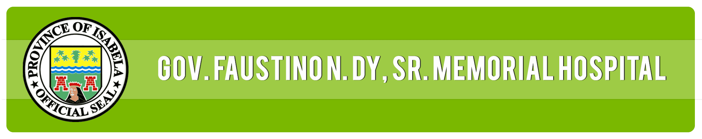

Maharlika Rd., Calamagui 2nd, City of Ilagan Isabela
Tel. No.(078) 624-1688 Fax No. 624-1295 / 624-1734
About Us
Our mission is to connect blood donors with those in need, ensuring a seamless and efficient process for blood donations and requests. By providing a platform where donors can register and seekers can request blood, we aim to save lives and support communities.